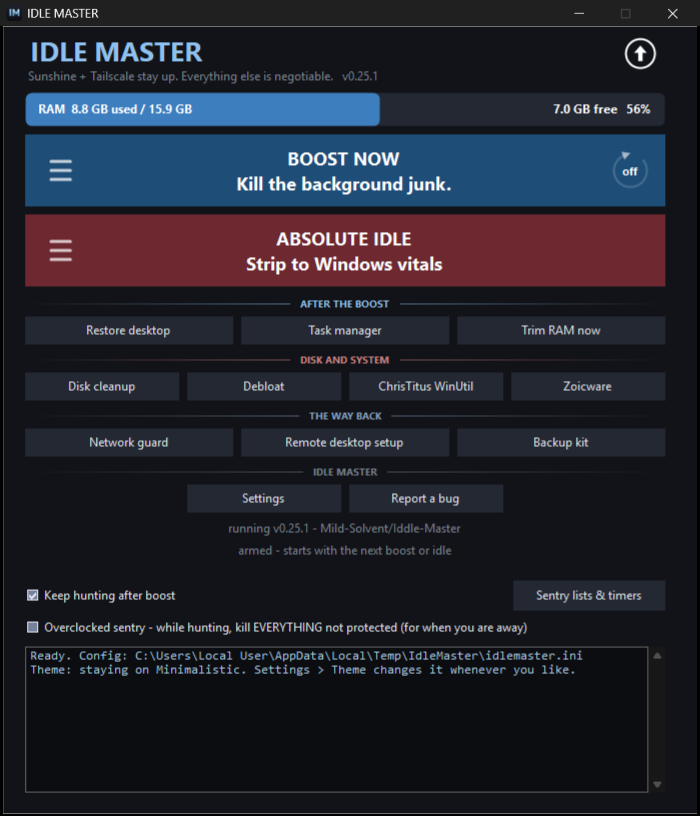
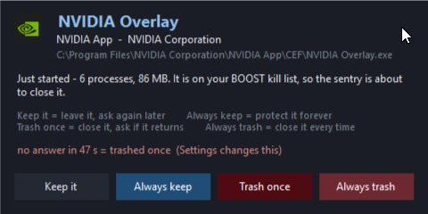
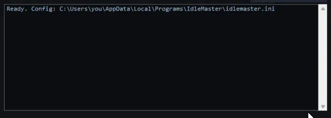
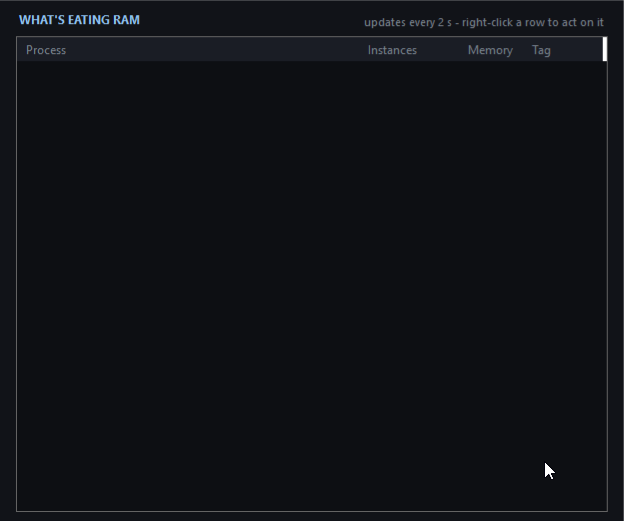
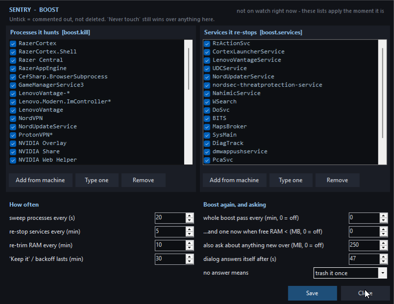
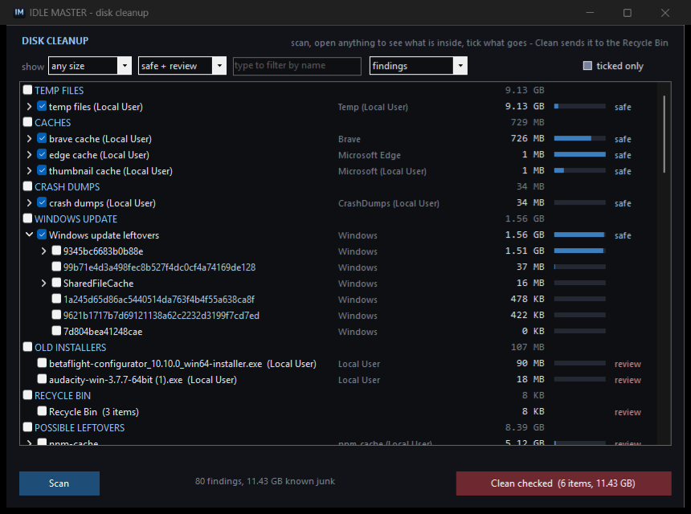
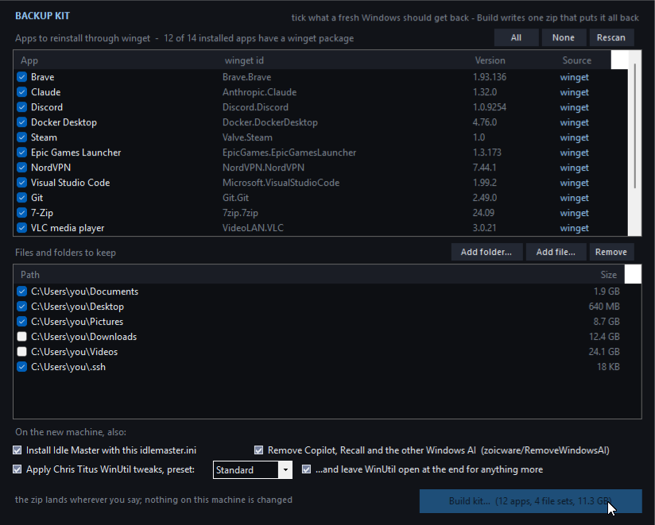
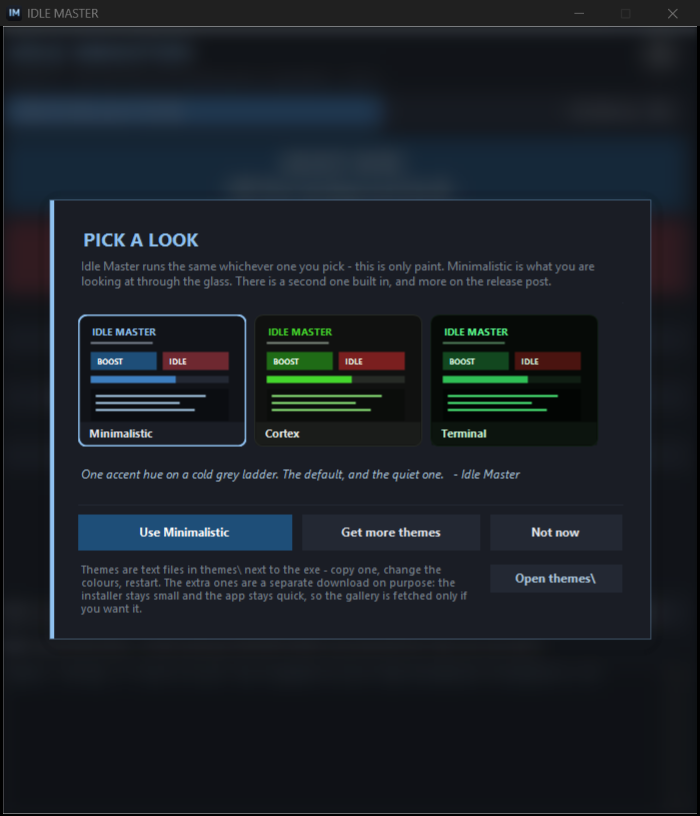
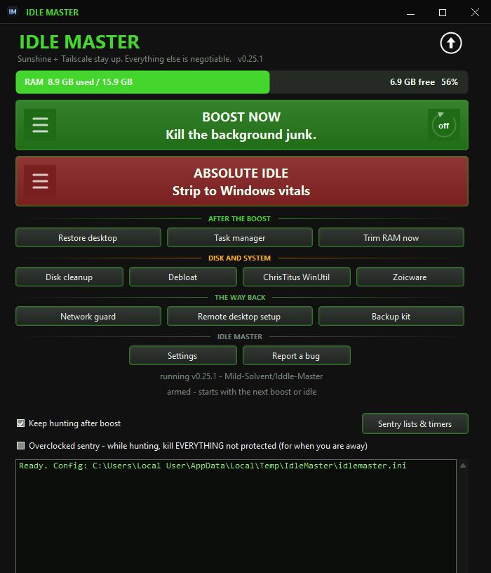
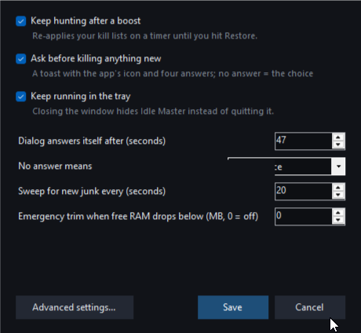

A single 675 KB exe that hunts down the updaters, launcher services and tray webviews eating your RAM, gives it back in a click — and then keeps it that way, instead of letting it all drift back within the hour.

Two buttons
Nothing is disabled, only stopped — a reboot puts the machine back on its own.
Updaters, launcher services, tray webviews, the search indexer — the RAM held by software nobody opened on purpose. Runs in about three seconds.
For a machine that just started or have to stay awaken. Browsers, chat apps, the shell itself — the whole box drops to Windows kernel, Defender, and the things you told it to keep. The shell is recycled, not left dead: Windows rebuilds it, fresh and lighter.
The sentry
WebView2 respawns for a tray icon, WSearch trigger-starts itself, Razer's
launcher returns. This is why every other RAM cleaner feels like a placebo. A background
thread re-applies the same lists on a timer, so the RAM stays where you put it
instead of drifting back up.
| Every | It does |
|---|---|
| 20 s | sweeps processes against the active mode's kill lists |
| 5 min | re-stops services from those lists that restarted themselves |
| 10 min | trims working sets and purges the standby list again |
| 5 min | checks your protected services are alive, restarts any that died |
On its first sweep it takes a census. Everything running then is the junk the mode was aimed at. Anything that appears after is something you deliberately started — so it gets a toast instead of a bullet.
[protect], remembered forever.No answer in 25 seconds counts as keep it. The tool should never be the reason you lost work while you were away from the keyboard.

Overclocked sentry is the away switch: while it hunts, everything not on the protected list goes, no toast, no census. Turn it on, press ABSOLUTE IDLE, walk away. It is red in the window on purpose — with nobody at the keyboard there is nothing to ask, and nothing to lose by not asking.
Measured, not guessed
One real machine: 15.9 GB total, 11.4 GB in use at the time of the scan.
Not one line of this is an estimate — and --report prints the same table
for your machine, tagging every process and service with the mode that would
close it. You see the plan before anything dies.
| Process | RAM | Closed by |
|---|---|---|
| Brave (28 processes) | 5.0 GB | IDLE |
| Claude desktop (17 processes) | 3.0 GB | IDLE |
| NordVPN UI + service + updater | 760 MB | BOOST IDLE |
| msedgewebview2 (17 tray/widget hosts) | 540 MB | BOOST |
| Windows shell (explorer, search host) — recycled, comes back fresh | 490 MB | IDLE |
| Razer Cortex + Central + services | 305 MB | BOOST |
| NVIDIA overlay / ShadowPlay | 110 MB | BOOST |
| Lenovo Vantage + add-ins | 90 MB | BOOST |
| Mesh-VPN tray icon (the daemon itself is untouched) | 68 MB | IDLE |
| Windows Search indexer | 60 MB | BOOST |

Boost takes the BOOST rows and leaves you working — about 1.5–2 GB back. Absolute idle takes both columns and lands the machine near 1.5–2 GB in use total; that floor is Windows kernel and Defender, and there is no honest way below it.

--report prints, live and
sorted, every row tagged with the mode that would close it. Right-click writes your
choice straight into the config.The whole tour
Two buttons and a log are the front door. Behind them is a task manager, a tuning page for the sentry, a review-first disk cleaner, and a one-zip backup kit — every one of them the real window, recorded on this machine.






The network guard
Freeing RAM on a box in another room is only useful while you can still get to it. So whenever Idle Master is running — window, tray or logon task — it measures the link, the internet, your mesh VPN and your streaming host every minute, repairs the first thing that is wrong, and measures again. It is silent while everything is fine.
| What it finds | What it does about it |
|---|---|
| Wi-Fi dropped | reconnects to a known network from your own ordered list, and stops Windows powering the adapter down |
| Adapter up, no address | renews the DHCP lease |
| A network service stopped | starts it again — the ones you named, not a guess |
| Ping answers but nothing connects | treated as trouble in its own right, because that is the signature of a machine that only looks online |
| A stopped VPN left its routes behind | removes the two dead half-routes and the DNS it left on that adapter — only ever while none of that VPN's services are running |
| Your own apps not where you calibrated them | restarts or relaunches them until the picture matches again |
A mesh VPN can log itself out while DNS is dead, and bringing it back can need an interactive sign-in. The guard says so at the keyboard rather than starting something it cannot finish. Two rules it never breaks: it does not touch a live tunnel's configuration, and it does not disable anything.
Get everything connected the way you like it — stream running, apps signed in — and press Calibrate. It records each app's exe, its service and the ports it is listening on, and from then on every check includes them. Sunshine and Tailscale ship as the worked example; the list is yours.
The rest of the window
Everything else the program does is one click from the front, grouped by what it costs you: what a boost can undo, what survives a reboot, what keeps you able to reach the machine, and the program itself.
| Band | What is in it |
|---|---|
| AFTER THE BOOST | Restore desktop puts back exactly what the last run took away. Task manager is a live table of what is eating RAM, every row tagged with the mode that would close it, right-click to write that choice into the config. Trim RAM now squeezes working sets and purges the standby list without closing anything. |
| DISK AND SYSTEM | Removal that a reboot does not undo. Disk cleanup reads the drive's file table and shows you the junk before it moves any of it. Debloat uninstalls the Store apps nobody asked for — listed with package, category and size, reviewed before anything goes. ChrisTitus WinUtil and Zoicware are doors to other people's debloaters, launched rather than imitated. |
| THE WAY BACK | Network guard is the page above. Remote desktop setup adds your own apps to its watch. Backup kit writes one zip that can put a fresh Windows back the way this one is. |
| IDLE MASTER | Settings in plain words, with every list and interval behind Advanced. Report a bug opens a pre-typed GitHub issue with the build, the Windows version and the last log lines — shown to you byte for byte first, and nothing leaves the machine until you press Submit in your own browser. |
The dial on the right of BOOST NOW is not a second kind of boost: it is that button, pressed for you every N minutes for as long as the window is up. The ring fills as the next one comes round. The sentry keeps hunting in between; this is the whole pass coming round again.
The handle on the left of each slab opens what that mode closes and stops — the boost list and the idle list, each editable from what is running right now. The arrow in the top corner is the update check: white while there is nothing to say, green the moment a release is out, and one click installs it.
The safety story
A tool that kills processes can leave you locked out of a machine you aren't sitting in front of. Most of the code is about making sure that never happens — whether you reach the box over RDP, Parsec, Moonlight, SSH, a mesh VPN, or nothing at all because it's the laptop in your lap.
[protect] is checked before any kill, even when something
is also on a kill list. Defender, lsass, the audio stack, the NVIDIA display
container, Docker and its WSL backend all ship protected — containers you left
running matter more than the RAM the backend costs. Add whatever you cannot afford
to lose; that list always wins.
Anything in [protect.services] gets a guard: before the
run finishes — and repeatedly, in idle mode — it checks those services are still
running, that the port is still listening and the adapter still up. If one died as
collateral damage, it restarts it and says so loudly in the log.
Put your remote-access stack in there and the machine cannot lock you out. Mine is a streaming host, so it ships with a Sunshine + Tailscale pair as the worked example — swap in yours and the same guard watches it.
Services are stopped, never disabled, so a reboot returns the machine to normal on its own — even if you never open the app again. Restore disarms the sentry first, otherwise it would shoot everything Restore just brought back.
--report prints the kill plan and touches nothing. The
sentry asks before closing anything you started yourself. Silence for 25 seconds
counts as keep it — the tool should never be the reason you lost work.
explorer.exe, and Winlogon rebuilds the session on its own — desktop,
taskbar and Start menu come back within seconds, fresh and a few hundred MB lighter
than the shell that had been running all day. The screen flashes black while that
happens, and open File Explorer windows do not survive it. The whole shell family is
protected in code, so the sentry can never hunt the rebuild. If it ever fails to
arrive: Ctrl+Shift+Esc → File → Run new task → browse
to IdleMaster.exe → Restore desktop — Task Manager is handled by winlogon,
so it works with no shell running. Or set KillExplorer=0 and idle mode
leaves the shell alone.
Command line
Every flag, every ini key and every default is in the documentation.
IdleMaster.exe open the window IdleMaster.exe --boost boost mode, no UI IdleMaster.exe --idle absolute idle, no UI IdleMaster.exe --restore undo (also stops the sentry) IdleMaster.exe --report print what's eating RAM, and the plan IdleMaster.exe --boost --watch boost, then keep hunting IdleMaster.exe --watch take up the watch for the last mode IdleMaster.exe --unwatch stop the sentry IdleMaster.exe --installtask run the sentry at every logon IdleMaster.exe --removetask ...and take it away again IdleMaster.exe --guard the network guard alone, no window IdleMaster.exe --network print what the guard sees, right now IdleMaster.exe --cleanup-report print the disk findings, delete nothing IdleMaster.exe --debloat-report print the removable Store apps
Run IdleMasterSetup.exe. It installs to
%LOCALAPPDATA%\Programs\IdleMaster — your own profile, so no
administrator is needed (the app elevates itself when it runs, which is where
admin is actually needed). Start Menu shortcut, normal entry in
Installed apps, optional logon task.
Updating is the same file, and the arrow in
the top corner does it for you — white while there is nothing to say, green when a
release is out, one click to install. A portable copy updates itself where it stands.
Nothing downloads until you say yes, and your idlemaster.ini is never
overwritten.
Compiles with the .NET Framework compiler that already ships inside Windows. No SDK, no NuGet, no internet.
powershell -ExecutionPolicy Bypass -File build.ps1
Outputs dist\IdleMaster.exe and
dist\IdleMasterSetup.exe, the app embedded in the installer.
Questions people actually ask
Most don't, and for one reason: they free memory once, and the software respawns within the hour. Idle Master closes the same processes on a 20-second timer, so the memory stays freed. It trims working sets and purges the standby list too, but the durable win comes from things not coming back — not from the trim.
On the measured machine — 15.9 GB total, 11.4 GB in use — boost freed
about 1.9 GB without closing anything the user had opened. Absolute idle brings the
whole box to roughly 1.5–2 GB in use, which is the Windows kernel and Defender
floor. Run --report to get the same number for your machine before
installing anything.
It is when the tool is reversible. Services are stopped, never disabled, so a reboot restores the machine even if you never open the app again. Every run writes down what it stopped; Restore walks that list backwards. The protected list is checked before any kill, open windows are never touched in boost, and anything you started yourself gets asked about first.
No — that is the constraint the whole design is built around. Anything
in [protect.services] is checked before the run and again after: the
service running, the port listening, the adapter up. If one died as collateral
damage it is restarted and logged loudly. Works the same for RDP, Parsec,
Moonlight, Sunshine, SSH or a mesh VPN.
Installing doesn't — it goes into your own profile at
%LOCALAPPDATA%\Programs\IdleMaster. Running does, because stopping
Windows services requires it, so the app elevates itself when it starts.
Restore desktop in the window, or
IdleMaster.exe --restore. It disarms the sentry first, then puts back
exactly what the last run took away. Rebooting works too, because nothing is ever
disabled in the first place.
One file. No dependencies. Reversible by a reboot.
New to it? The first-run walkthrough takes two minutes.